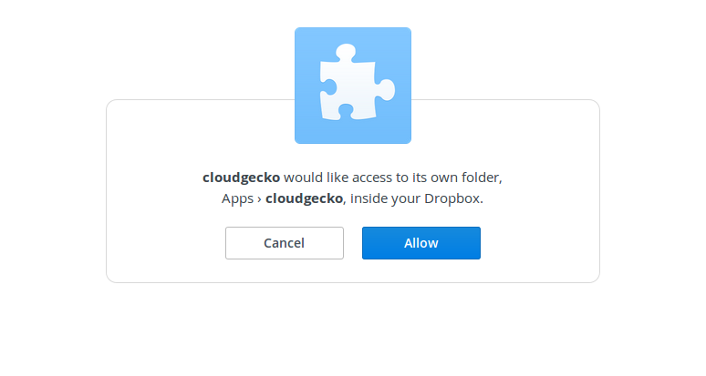
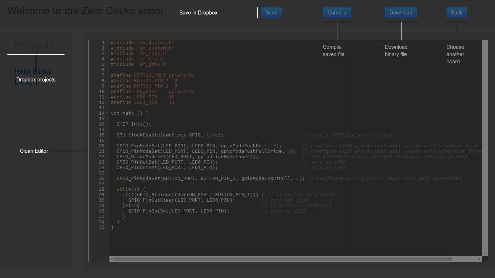

The geckocloud is an online development and collaboration platform for the Gecko series of microcontrollers by Silicon Labs.
This is not in complete production mode, please be patient with site loading. Stuff costs money. If the app is down, its because I have I have run short of the moolah.
App Idea
Created as a hackagecko project by a summer intern at Silicon Labs, the application uses Twitter Bootstrap for its front-end design and the Nodejs framework for its backend. The idea is to provide a clean hassle free plug and play experience for anyone looking to get his hands dirty with embedded systems. The application integrates the gcc compiler and the dropbox api at the backend to provide a no-brainer UI to kickstart development and save projects on the cloud as you go.

Future plans
- User feedback oriented examples
- Debugger (OpenOCD)
- Integrate with major uC families
- Provide js libraries for crowdsourcing
I have been actively working on this side project for the summer, feel free to shoot me an email about any ideas you might have.
Currently hosted on Amazon AWS.